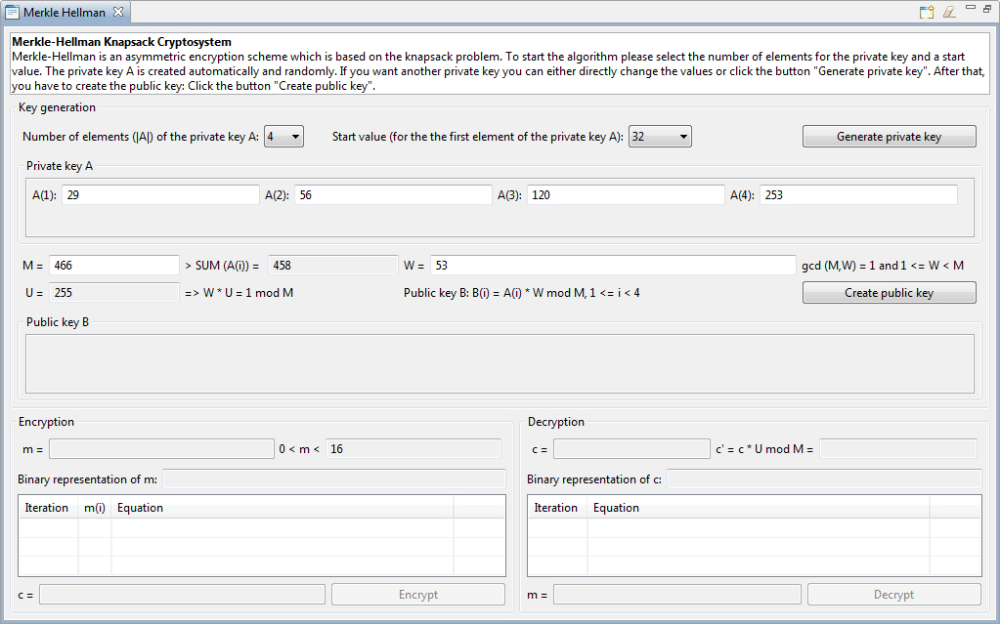
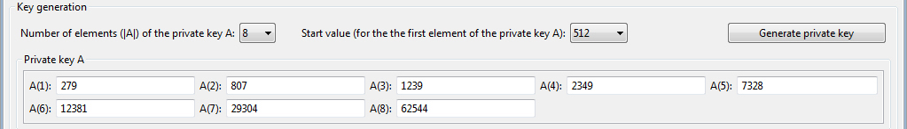
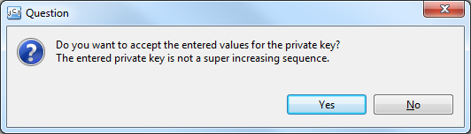
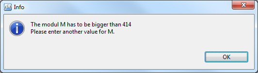
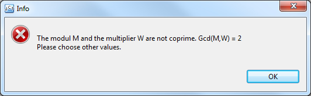
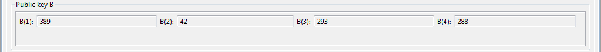
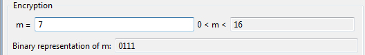
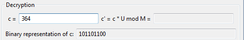
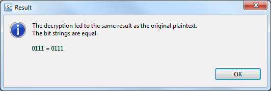
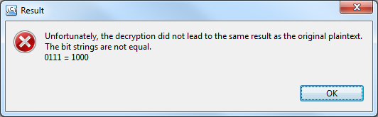

This online help describes the functionality of the plug-in Merkle-Hellman.
Table of contents:
1) Key generation
2) Encryption
3) Decryption
4) Meaning of the icons in the menu bar
5) Sources
The plug-in can be started via the menu Visuals or via the crypto explorer tab Visuals.

The plug-in consists of a description field at the top, and three basic areas below: Key generation, Encryption and Decryption.
In the description field the corresponding statements about the algorithm are displayed dynamically, depending on which step of the algorithm the user is currently performing.
This section summarizes the actions that are required to generate a private key and a public key.
First of all the number of the elements for the private key and the initial start value must be selected from the drop-down boxes. By default, the number of elements for the private key is 4 and the start value is $32$. The start value is needed for the generation of the first element of the private key A(1). It will be used a random number in the range of [start value/2 - start value]. The number of the private key elements will be dynamically created depending on user selection.

On this selection, the user can either use the automatically and randomly generated sample values for A(i), M and W, or he can manually enter new values, or he can generate new values for the private key by clicking the button Generate private key .
If the entered private key elements A(i) are not a superincreasing vector and the user is clicking on the button , the user gets displayed the following note message:

There is also a check for the parameters M and W when the user is clicking the button . Depending on which condition is violated different information dialogs pop up.
For M <= SUM(A(i)) the following information is shown:

For ggT(M,W) != 1 the following information is shown:

After all conditions are met the public key will be calculated and the elements B(i) are shown in the Public key B area.

After the keys have been generated, the user can enter a message m in the corresponding field. As you type the message, the binary representation is dynamically calculated in addition and shown below in the field binary representation of m. The button will be activated once a valid value m is entered.

When you click on the button the message parts are calculated and the iterations of the calculation will be shown in the table below. The ciphertext is calculated, displayed and entered into the decryption area.
For the decryption you can enter any value for c. The binary representation of the entered value is dynamically calculated and shown again.

By clicking the button the ciphertext will be decryped and its iterations of the calculation will be shown in the table. After the decryption the user has the possibility to decrypt other messages with the same keys.

In case that the decryption was successful the following message will be displayed and both the plaintext and the ciphertest will be colored green:

Otherwise, the plaintext and the ciphertext are highlighted in red color and the following message appears:

4) Meaning of the icons in the menu bar